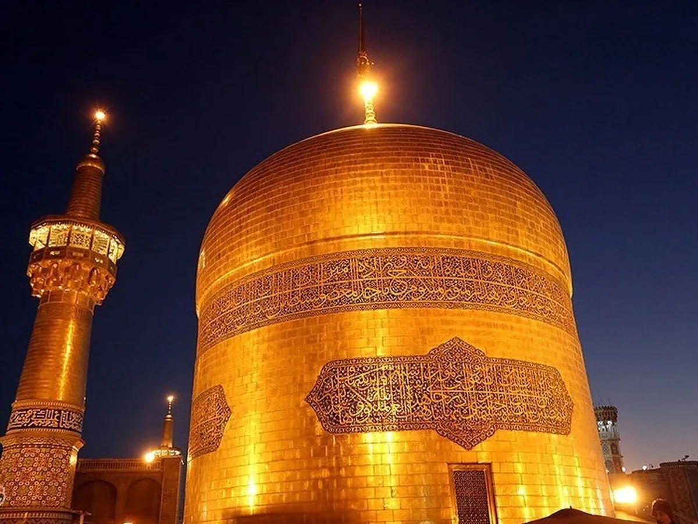

مرجع قانوني وتوعوي محض · القانون المدني الإيراني وحماية المسافر
الزواج المؤقت في إيران: الإطار القانوني والشروط الرسمية

الإجابة المختصرة
ينظّم القانون المدني الإيراني أحكام زواج المتعة في إيران (ويُشار إليه أيضاً بعبارة زواج مؤقت في إيران أو زواج المتعة في الاستخدام الدارج) في المواد ١٠٧٥ وما يليها باشتراط تعيين المدة المعلومة والمهر الصريح في العقد. غير أن أسئلة مثل كيفية الزواج المؤقت في إيران أو الزواج المؤقت في مشهد وزواج المتعة في مشهد لا تكتمل قانونياً دون فهم المادة ١٠٦٠ التي تشترط إذناً رسمياً مسبقاً لـزواج المواطن الأجنبي من مواطنة إيرانية، وكذلك المادة ٢١ من قانون حماية الأسرة بشأن التسجيل الرسمي الإلزامي.
١. شروط زواج المتعة في إيران في القانون المدني الإيراني
لتحقيق الوضوح القانوني حول شروط زواج المتعة في إيران بعيداً عن الإشاعات، يضبط القانون المدني الإيراني (المصادق عليه والمستمر تطبيقه مع تعديلات قانون حماية الأسرة) أحكام هذا العقد ضمن نصوص محددة أبرزها:
| البند القانوني | المرجع في القانون الإيراني | الأثر القانوني المباشر |
|---|---|---|
| تعيين الأجل والمهر | المادتان ١٠٧٥ و١٠٩٥ من القانون المدني | لا ينعقد الزواج المؤقت قانونياً ما لم تُحدَّد مدة زمنية دقيقة ومعلومة ومهر معلوم وقت العقد؛ وإلا بَطُل العقد. |
| النفقة والإرث | المادتان ١٠٧٧ و١١١٣ من القانون المدني | لا تستحق الزوجة في العقد المؤقت نفقةً أو إرثاً تلقائياً ما لم يُشترط غير ذلك، كما لا يجري فيه الطلاق بل ينتهي بانقضاء المدة أو هبة المدة المتبقية. |
| زواج الأجنبي من إيرانية | المادة ١٠٦٠ من القانون المدني الإيراني | زواج المرأة الإيرانية من مواطن أجنبي مشروط بالحصول على إذن رسمي مسبق من الجهات المختصة (وزارة الداخلية / الدوائر المعنية). |
| التسجيل الرسمي الإلزامي | المادة ٢١ من قانون حماية الأسرة | الزواج الدائم واجب التسجيل دائماً، أما الزواج المؤقت فيجب تسجيله في دفاتر التوثيق الرسمية عند الحمل أو اتفاق الطرفين أو اشتراطه مسبقاً. |
٢. شروط خاصة برعايا الدول العربية وضوابط الزواج المؤقت للعراقيين في إيران
يظن بعض الزوار خطأً أن القواعد المطبقة بين المواطنين الإيرانيين تنطبق تلقائياً على الزوار العرب عند البحث عن الزواج المؤقت للعراقيين في إيران أو إجراء عقد زواج مؤقت في مشهد، والحقيقة أن المسار يخضع لإجراءات رسمية مشددة:
- اشتراط الإذن الرسمي (المادة ١٠٦٠): يتطلب توثيق أي عقد زواج بين أجنبي وإيرانية مساراً إدارياً رسمياً وموافقات مسبقة من الجهات الحكومية وإبراز شهادة خلو موانع مصدقة عبر القنوات الدبلوماسية لبلد المسافر، ولا يكفي أي اتفاق عرفي دون هذا الإذن.
- الضوابط الفندقية والرقابية: تلتزم الفنادق والشقق الفندقية المرخصة في مشهد وسائر المدن بتعليمات تسجيل النزلاء عبر جواز السفر الأصلي ووثائق الزواج الرسمية المعتمدة قانونياً فقط؛ ولا تُقبل أي أوراق غير مسجلة رسمياً لتسكين شخصين في غرفة واحدة.
- أحكام العدة والأنساب وحفظ الحقوق: تخضع المرأة لعدّة قانونية وشرعية عند انقضاء المدة أو بذلها (المادة ١١٥٢)، وفي حال وجود حمل أو طفل يثبت النسب قانونياً وتترتب التزامات الأبوة والنفقة وتسجيل المولود وفق قانون الأحوال المدنية وقانون حماية الأسرة دون استثناء.
٣. تحذيرات حماية المسافر من الاحتيال والوسطاء الوهميين
تهدف الإضاءة على هذا الجانب في دليلنا إلى حماية الزائر العربي من أخطار قانونية ومالية شائعة حول المراقد والمطارات وعبر منصات التواصل:
- الاحتيال المالي عبر الوسطاء: تنتشر إعلانات مجهولة المصدر تدّعي توفير خدمات مرافقة أو عقود سريعة مقابل تحويلات مالية مسبقة؛ هذه القنوات خارج القانون وتُعد من أبرز مصادر الابتزاز والسرقة في السفر.
- عدم شرعية الأختام المزورة: شراء أوراق غير مسجلة في منظومة كاتب العدل الرسمي (دفاتر ثبت ازدواج) يضع حاملها أمام تهمة حمل محرر غير رسمي أو مخالفة الأنظمة المحلية.
- الاستشارة القانونية عند الحاجة الحقيقية: في حال وجود قضية أحوال شخصية أو معاملة زواج نظامية مشروعة بين شخصين، المرجع الوحيد هو المحامي المرخص في نقابة المحامين الإيرانية ومكتب التوثيق الرسمي وقنصلية البلد المعني، وليس مكاتب السياحة.
٤. ما الذي ننسّقه في رحلتك إلى مشهد؟
تقتصر خدماتنا على الترتيبات السياحية والعلاجية النظامية الواضحة: مراجعة شروط التأشيرة حسب الجنسية، وتنسيق الإقامة الفندقية الموثوقة، وبرامج شهر العسل الرسمية للأزواج، وفحص الأملاك والحوالات عبر الصرافات المرخصة. تصفّح قائمة الخدمات المعتمدة لمعرفة حدود مسؤوليتنا بالتفصيل.
مراجع تشريعية ورسمية للتحقق
تُراجع النصوص التشريعية الإيرانية عبر بوابات القوانين الرسمية، وعبر السفارات والقنصليات المعتمدة لأحوال الرعايا الأجانب:
أسئلة شائعة عن الإطار القانوني للزواج المؤقت في إيران
هل يقدم موقع حسين أي خدمات ترتيب أو وساطة للزواج في إيران؟
لا؛ يقدّم حسين وموقع حسين للسياحة في مشهد خدمات السياحة والسفر والإقامة الفندقية والنقل والمترجم والتنسيق غير السريري فقط. هذه الصفحة مرجع معلوماتي وتوعوي محض عن القانون الإيراني ولا تُقدّم أي خدمات زواج أو وساطة بأي شكل.
ما السند القانوني للزواج المؤقت في القانون الإيراني؟
يعترف القانون المدني الإيراني بالزواج المنقطع في المواد ١٠٧٥ وما بعدها، ويشترط لصحته تعيين المدة الزمنية المعلومة وتحديد المهر المتفق عليه في صيغة العقد، ولا يترتب عليه حق إرث تلقائي بين الزوجين كما في الزواج الدائم.
هل يجوز زواج المواطن الأجنبي من مواطنة إيرانية دون إذن رسمي؟
تنص المادة ١٠٦٠ من القانون المدني الإيراني على أن زواج المواطنة الإيرانية من مواطن أجنبي يقتضي استحصال إذن رسمي مسبق من الجهات الحكومية المختصة، ويخضع هذا الشرط لضوابط إدارية وأمنية وقانونية صارمة.
متى يكون تسجيل الزواج المؤقت إلزامياً في دفاتر التوثيق الإيرانية؟
وفق المادة ٢١ من قانون حماية الأسرة الإيراني، يكون التسجيل الرسمي للزواج المؤقت إلزامياً في ثلاث حالات: حدوث الحمل أو وجود طفل، أو اتفاق الطرفين على التسجيل، أو اشتراط التسجيل مسبقاً ضمن العقد، ويثبت نسب الطفل قانونياً في جميع الأحوال.
هل تقبل الفنادق في مشهد بأوراق عرفية غير مسجلة عند تسكين النزلاء؟
تخضع الفنادق المرخصة في إيران لتعليمات الرقابة الفندقية والأمنية؛ إذ تتطلب جوازات السفر الأصلية للنزلاء ووثيقة زواج رسمية مصدّقة ومثبتة قانونياً عند الإقامة الزوجية، ولا تقبل بالاتفاقات الشفهية أو الأوراق غير الرسمية.